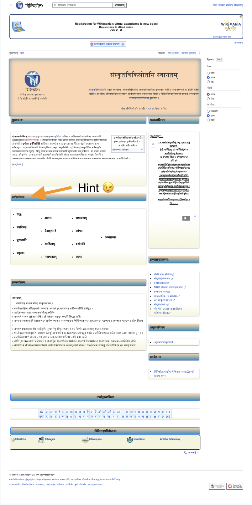
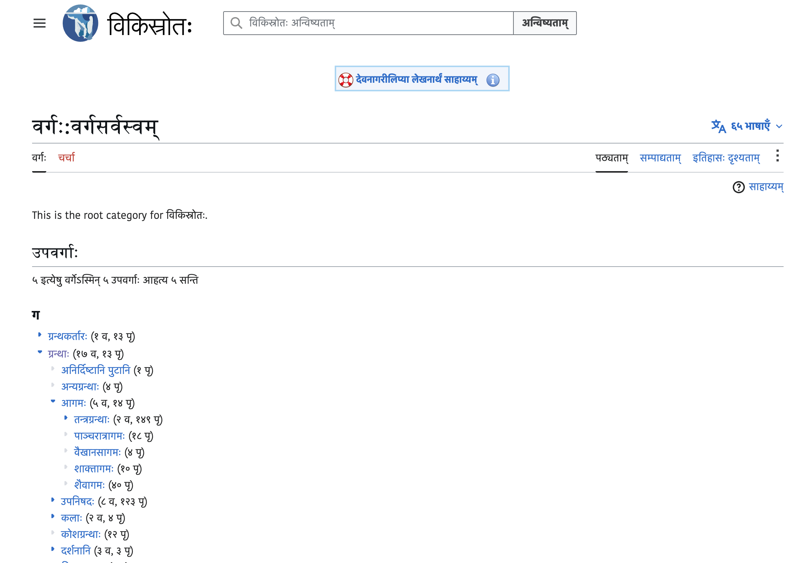

A set of questions came up recently on the Indology mailing list about Sanskrit Wikisource — what is it, who made it, and how useful is it? I've spent some time working this out, so here's what I know.
Wikisource is part of the Wikimedia family — same foundation as Wikipedia — and like its siblings, it is a crowdsourced project with public revision history and no single creator. The Sanskrit subdomain has been used by motivated individuals to work on and share material they might not have otherwise, which is something to be genuinely thankful for. On multiple occasions, I've found very interesting things there, like full texts of both Gaṅgeśa's Tattvacintāmaṇi and Śrīharṣa's Naiṣadhīyacarita. But Wikisource was simply not built to host e-text collections. As a result, it can be very hard to plumb the depths of its contained materials — a fact ironically reinforced by the Wikisource logo itself.

Did you know that Sanskrit Wikisource has hundreds of megabytes of text data? If you’ve ever tried to browse it, did you succeed? No? You're not alone.
Structural Problems
The best way to navigate Sanskrit Wikisource is not clear from its home page.

First, not everyone is comfortable with an all-Sanskrit, all-Devanagari interface. Second, it's a cluttered mess. If you look past the less useful stuff, the वर्गसर्वस्वम् section offers some links to category pages, but clicking them gives you only a narrow view of one category at a time.
Pro tip: There's a separate https://sa.wikisource.org/wiki/वर्गः:वर्गसर्वस्वम् page a few wiki-clicks away, if you know what you're looking for. There, you find a dynamic dropdown tree structure that is already much better for browsing.

As for the categorical breakdown itself, it’s mostly unobjectionable, but as is always the case, there can be a learning curve if you come from a different taxonomic perspective. And there is unnecessary mess here, too: poor धर्मशास्त्रम् is for some reason stranded and alone outside of the otherwise top-level ग्रन्थाः ("books"? "texts"?), and there are several wiki-internal categories of no importance for most users, e.g., अनिर्दिष्टानि पुटानि and निष्कासनाय — modern-Sanskrit calques that I personally don’t understand right away when I see them, adding to the fatigue.
Granted, there are other access options, as well: a search bar, and an alphabetical index (e.g., फ). But I find both of these to be myopically restrictive in their own ways, too. My bet is that, even after trying all of the above, a typical user may still be shrugging their shoulders about whether this collection has material that might be useful to them. After all the work that went in, by so many people, that's a shame.
A Better Interface
Fortunately, it's possible to create a better way in, without disrupting the project itself. After cobbling together an understanding of the site's structure, I made an alternate interface to its data that I personally find much more user-friendly.
https://tylergneill.github.io/sanskrit-wikisource-mirror

What this alternate interface gives you is: 1) cleaner browsing with context maintained in a sidebar, 2) no Wikimedia artifacts, 3) transliteration options, 4) better rolling up and abstraction to a composite "text" level, and 5) clearer stats: page and text counts, plus size and last-updated info.
The way I did it was by 1) scraping the full content to analyze structure and to estimate scope, 2) boiling that info down to a single file, and then 3) building a simple single-page app on top of that file, which GitHub Pages easily hosts for free.
This web app only organizes and presents links to the source Sanskrit Wikisource data. What it does not do is re-host that material, since the collection is demonstrably still living and growing, as the last-updated info clearly shows — there's also a “सद्यपरिवर्तनानि,” i.e., Recent Changes page. Like Pāṇḍitya's use of Pandit Project, this mirror is simply a snapshot in time which points to its source, and it needs to be periodically refreshed to stay current (pipeline here in Git).
What the snapshot numbers from Summer 2026 reveal: Sanskrit Wikisource holds about 390mb of plain-text content in 2,200 texts across roughly 22,000 individual web pages. For comparison, GRETIL is around 350mb before controlling for duplication, roughly 175mb after (see previous post). In short, it is definitely huge, and it's very interesting.
Data Problems
Getting back to assessment, as mentioned above, some works may be spread across dozens or hundreds of sub-pages, while others are confined to just one. On top of that, given the crowdsourced nature of the data, duplications do occur, with nothing to tell you which version may be preferable for a given purpose. I mentioned Naiṣadhīyacarita above. As it turns out, there are three versions of it on Wikisource. By my reckoning, one... one... and one is clearly superior ...
In fact, that was my entry point into this exploration. I was looking to digitize Śrīharṣa's Naiṣadhīyacarita (one of the traditional five mahākāvyas) for HANSEL, learned that sanskritsahitya.org already had a version derived from Wikisource, and then struggled to find it there, ultimately finding multiple versions and the host of other issues discussed here. One day of trying to understand how Wikisource even works later, I was convinced the right move was to clarify the collection for others before doing anything else. Hopefully this post saves you that day.
Finally, perhaps best emblematic of neglect at the corpus-level of curation is the near complete lack of metadata. With the exception of the subset of texts directly linked to source images by virtue of being produced through the Wikisource-internal OCR pipeline called "..." (using out-of-the-box Tesseract, I believe), there is frequently no mention of what edition or editions the text is based, no explanation of who made it, under what terms the data is being shared, whether the item can be considered finished, or anything else to keep in mind when using it. In short, in my experience, Sanskrit Wikisource is absolutely abysmal for metadata.
Structural problems directly contributing to curation problems
Returning to the as a third structural problem, this category tree is far from trustworthy, because categories must be added as tags, manually each time, and there's no clear signal when this has not been done. If things are miscategorized, they will fall through the cracks, being findable basically only via the Devanagari search bar. How big of a problem is this? When I counted, there were 32,279 pages — most of which are individual sub-pages of larger works — and only 1,195 pages had a category. Simply put, it takes considerable research to figure out what's covered by categories and what's not.
The above duplication issue is more understandable when you learn more about the inherent inertia of the wiki format. Pages are very hard to delete or move once created, which means that vicious duplication accumulates. A text project gets copied so someone can take it in a new direction; the old version lingers; nothing clarifies which is more reliable.
As a crowdsourced project, Sanskrit Wikisource has no central oversight, thus lots of diffusion of responsibility. Users may have obscure handles on the platform, and there's no clear way how to get in touch with anyone. In short, anyone can come along and post things, like a bulletin board — with cryptic little signatures to indicate that a human was in fact there — and some other users may understand enough to push back on certain aspects of certain items, but for the most part things are just growing organically, like graffiti. No one ever comes along to clean the bulletin board. No one ensures that it's organized properly. That's all ok if we KNOW clearly that it's a bulletin board.
How to Proceed
Given the above metadata problems, I hope no one tries to take the data, duplicate it, and ingest it for use elsewhere. This will only compound the existing confusion. Instead, my opinion is that we as a scholarly community should approach items one-by-one, study them carefully, and where possible, improve them and transplant them onto platforms where they can receive proper scholarly curation. sanskritsahitya.org's Naiṣadhīyacaritam is an example of this. My strong opinion is that bulk ingestion of this material in its current condition would only compound the existing confusion.
There are several other similar cases. Once I extend the alternate-interface treatment to them, I intend to maintain this as an additional Kalpataru Grove project, under a unified interface called Sāgarasaṅgama. As the collections can be more understood, the metadata can be further ingested into SETI so that it can be visualized in Pāṇḍitya. And in individual cases, I will transplant some individual items of high potential value to HANSEL, and I hope others follow suit with similar platforms.